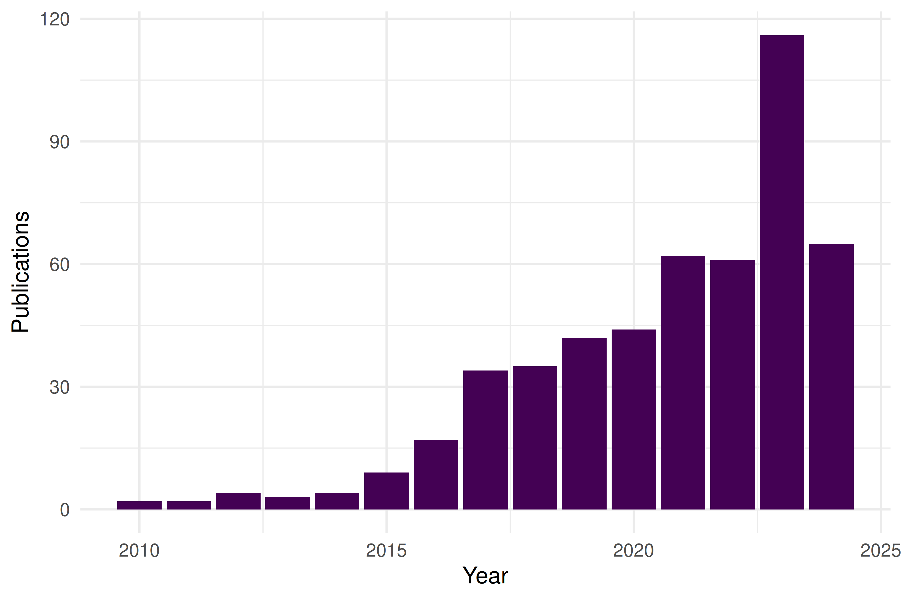
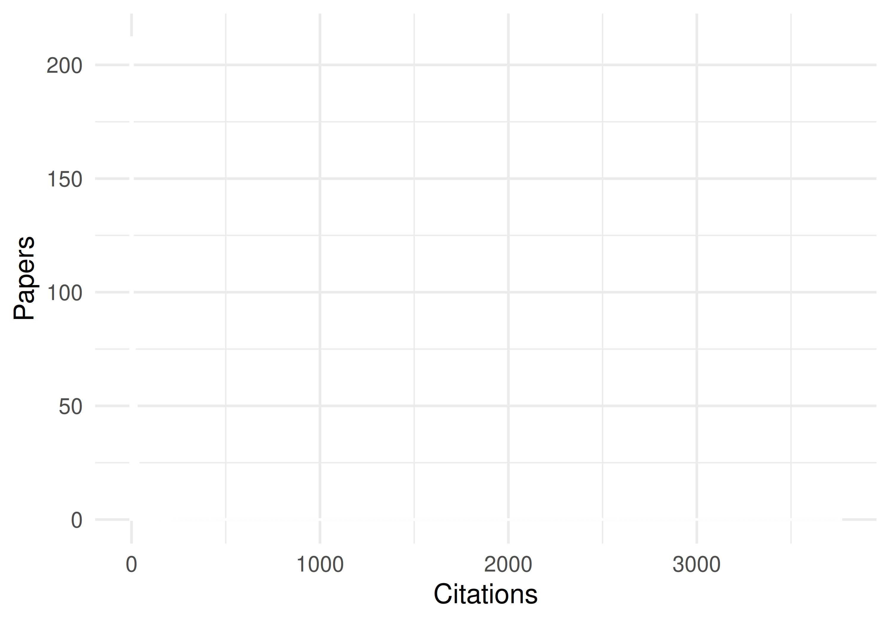
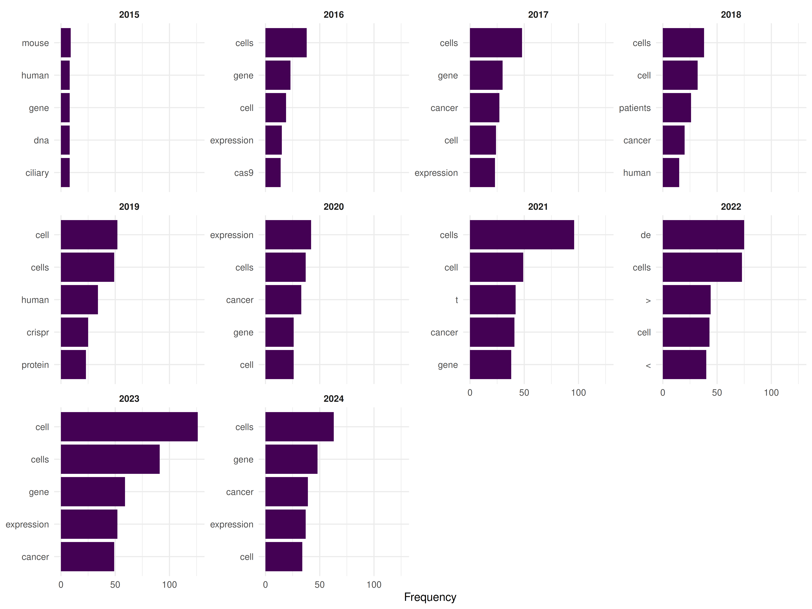

39 Case Study 1: CRISPR Field Review (2010–2024)
39.1 Objective
Map the structure, growth, and evolution of CRISPR gene editing research from its emergence to its current state using open bibliometric data.
39.3 Data acquisition
works <- oa_fetch(
entity = "works",
search = "CRISPR",
from_publication_date = "2010-01-01",
to_publication_date = "2024-06-30",
type = "article",
options = list(sample = 500, seed = 42)
)
works <- works |>
mutate(year = year(publication_date))
cat(glue("CRISPR articles retrieved: {nrow(works)}\n"))#> CRISPR articles retrieved: 500#> Year range: 2010--202439.4 Publication growth
works |>
count(year) |>
ggplot(aes(x = year, y = n)) +
geom_col(fill = palette_sci(1)) +
labs(x = "Year", y = "Publications") +
theme_sci()
Figure 39.1: Annual publication output in the CRISPR field.
39.5 Citation landscape
ggplot(works, aes(x = cited_by_count)) +
geom_histogram(binwidth = 10, fill = palette_sci(1), colour = "white") +
labs(x = "Citations", y = "Papers") +
theme_sci()
Figure 39.2: Citation distribution of CRISPR articles.
works |>
arrange(desc(cited_by_count)) |>
head(10) |>
select(display_name, year, cited_by_count, source_display_name) |>
gt()| display_name | year | cited_by_count | source_display_name |
|---|---|---|---|
| CRISPR-Mediated Modular RNA-Guided Regulation of Transcription in Eukaryotes | 2013 | 3761 | Cell |
| Multiplexed and portable nucleic acid detection platform with Cas13, Cas12a, and Csm6 | 2018 | 2579 | Science |
| Genome editing in potato via CRISPR‐Cas9 ribonucleoprotein delivery | 2018 | 424 | Physiologia Plantarum |
| The chromosomal organization of horizontal gene transfer in bacteria | 2017 | 245 | Nature Communications |
| A highly efficient single-step, markerless strategy for multi-copy chromosomal integration of large biochemical pathways in Saccharomyces cerevisiae | 2015 | 215 | Metabolic Engineering |
| Nucleolar RNA polymerase II drives ribosome biogenesis | 2020 | 215 | Nature |
| The m6A pathway facilitates sex determination in Drosophila | 2017 | 203 | Nature Communications |
| A CRISPR way for accelerating improvement of food crops | 2020 | 192 | Nature Food |
| The helicase domain of Polθ counteracts RPA to promote alt-NHEJ | 2017 | 192 | Nature Structural & Molecular Biology |
| Compact RNA editors with small Cas13 proteins | 2021 | 176 | Nature Biotechnology |
39.7 Topic evolution
text_df <- works |>
filter(!is.na(abstract), nchar(abstract) > 50) |>
transmute(doc_id = id, text = paste(display_name, abstract, sep = ". "), year)
corp <- corpus(text_df, docid_field = "doc_id", text_field = "text")
toks <- tokens(corp, remove_punct = TRUE, remove_numbers = TRUE) |>
tokens_tolower() |>
tokens_remove(stopwords("en")) |>
tokens_remove(c("study", "paper", "results", "using", "based"))
dfmat <- dfm(toks) |> dfm_trim(min_termfreq = 5, min_docfreq = 3)
top_by_year <- map_dfr(unique(text_df$year), function(yr) {
docs <- docvars(dfmat, "year") == yr
if (sum(docs) < 5) return(tibble())
top <- topfeatures(dfmat[docs, ], 5)
tibble(year = yr, term = names(top), freq = unname(top))
})
top_by_year |>
group_by(year) |>
mutate(term = reorder_within(term, freq, year)) |>
ggplot(aes(x = freq, y = term)) +
geom_col(fill = palette_sci(1)) +
facet_wrap(~ year, scales = "free_y", ncol = 4) +
scale_y_reordered() +
labs(x = "Frequency", y = NULL) +
theme_sci(base_size = 8)
Figure 39.4: Top terms by year showing topical evolution.
39.8 Key findings
- Explosive growth: CRISPR publications grew exponentially from 2012, reflecting the rapid adoption of Cas9-based editing.
- Citation concentration: A small number of foundational papers dominate the citation landscape.
- Collaborative structure: The co-authorship network shows distinct communities, likely corresponding to different application domains (therapeutics, agriculture, basic biology).
- Topic evolution: Early terms focus on methodology; later years shift toward applications and clinical translation.
39.9 Lessons learned
- OpenAlex sampling provides a representative snapshot but may miss some highly specialised or non-English publications.
- The citation distribution is extreme: median citations are far below the mean, making median-based statistics essential.
- Co-authorship networks in fast-growing fields are fragmented; many research groups work independently.
This book was built by the bookdown R package.